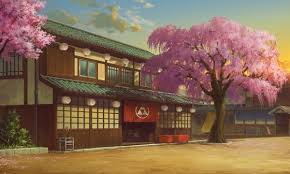

現在見ているアニメ
私が今現在診ているアニメは、異世界にいくものが多いです。
その理由は、異世界に行ったりするアニメの多くは主人公がつよくなっていて、
敵を倒す姿がとても爽快であるため、見ていてストレスフリーだからです。
現在見ているマンガ
現在見ている漫画では、アニメの時とうってかわってバトルするものよりも、
のんびりだらだらとすごしたりといった、コメディ要素が強いものを多く読んでいます。
基本的にはバトルしたり、絵で迫力を伝えてくるような作品が個人的には好きで、代表作を挙げるとすれば
ワンパンマンというでしょう。
この作品は、ギャグ要素とバトル要素がすごくいいバランスとなっているので時間がある方はぜひご覧になってみてください。
